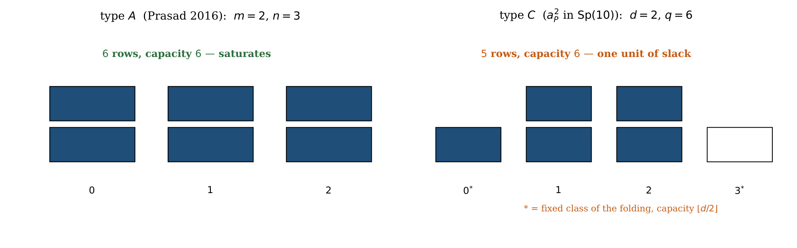
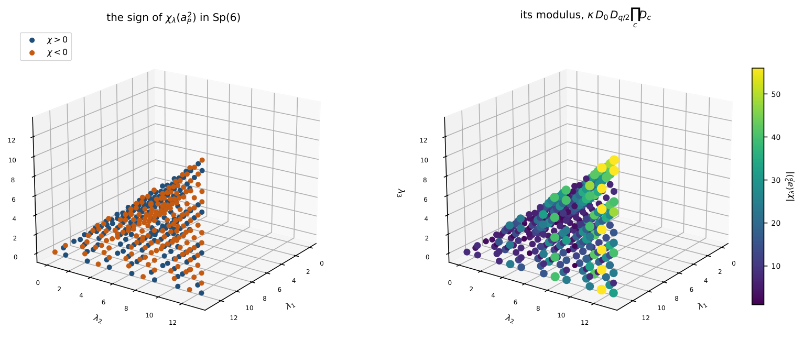
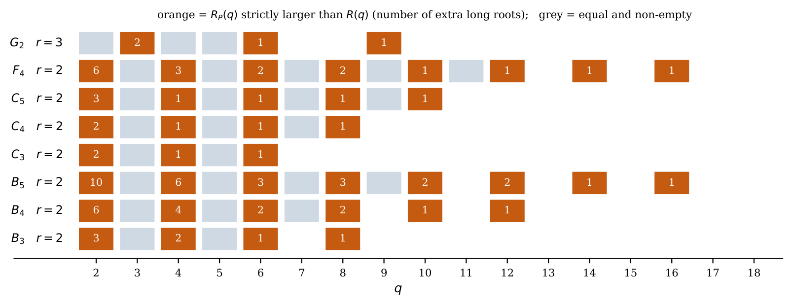

Integer character values on the ρ-line of Sp(2m)
At a glance
What the paper contributes
Kostant's element aP of Sp(2m) is one point of the line θ ↦ gθ = exp(2πiθρ♯), and at it every character is 0 or ±1. The paper studies the rest of the line, and above all the powers aPk, where ρ lies on root walls and the alcove argument no longer applies.
- A classification (Theorem 5.1): every character of Sp(2m) is an integer at g1/q exactly for q | 2m, q | 2m+1, q | 2m+2, and q = 6 with m ≡ 1 (mod 3); the powers of aP are the family q | 2m+2.
- A vanishing criterion at every rational point (Theorem 3.1): χλ(gp/q) ≠ 0 iff Nq(λ+ρ) = Nq(ρ); in type C, capacities of folded residue classes, with one unit of slack when d is even (Corollary 6.1, Proposition 6.2).
- The value at every power, sign included (Theorem 7.1): (−1)Ep,q(λ) Zq(λ+ρ)/Zq(ρ), through a residue lemma that needs no pairing of roots (Proposition 9.1); its modulus is κ ∈ {1, 2} times dimensions of GLn, Sp2n and SO2n+1, one per folded class (Theorem 10.1); a closed count of the survivors for every q (Theorem 11.1); G2 at q = 3 (Corollary 12.1).
What the paper says is not new. At aP itself the criterion and the sign are Corollary 3.2 of Cellini–Möseneder Frajria–Papi; the coroot form is Corollary 3.7 of Nadimpalli–Pattanayak–Prasad; the principal specialisation is classical; at q = 2 the factorisation is Theorem 5.1 of Karmakar.
🚀 Start here: Theorem 3.1: the zero-count criterion: χ_λ(g_(p/q)) ≠ 0 iff Nq(λ+ρ) = Nq(ρ), at every rational point of the ρ-line.
Main results:
- Theorem 3.1: the zero-count criterion: χ_λ(g_(p/q)) ≠ 0 iff Nq(λ+ρ) = Nq(ρ), at every rational point of the ρ-line
- Theorem 5.1: every character is an integer at g_(1/q) exactly for q | 2m, q | 2m+1, q | 2m+2, or q = 6 with m ≡ 1 (mod 3)
- Theorem 7.1: the value at every power, sign included: χ_λ(a_Pᵏ) = (−1)^(E_(p,q)(λ)) Zq(λ+ρ)/Zq(ρ) on the survivors, 0 elsewhere
- Theorem 10.1: the modulus factors as κ ∈ 1, 2 times dimensions of GLₙ, Sp₂n and SO₂n+1 representations, one per folded class
🗺️ Map of the results (click a box to go to it)
Dependencies in the written proof: an arrow A → B means that this proof of B uses A. Every result rests on its written proof; the tags record what was checked besides, and each statement's “Evidence & scope” block says how far. The colour of a box is its strongest tag, in the order above; the tags in the box give the rest. Boxes with a thick border are the main results; click a box to read the statement.
📐 Setting (copied from the paper, §2)
Let \(G\) be simple and simply connected with maximal torus \(T\), roots \(\Phi \), positive roots \(\Phi ^+\), and \(\rho \) the half-sum of \(\Phi ^+\). Normalise the invariant form so that short roots have \((\alpha ,\alpha )=2\), and write \(\rho ^\sharp \) for the vector of \(\mathfrak t\) that the form identifies with \(\rho \). For a real parameter \(\theta \) put
so that a weight \(\mu \) takes the value \(e^{2\pi i\theta (\mu ,\rho )}\) on \(g_\theta \). Throughout, \(\theta =p/q\) in lowest terms, and \(q\) is the denominator of the parameter, which is the integer every count below is taken modulo. In \(\mathrm{Sp}(2m)\) we have \(\rho =(m,m-1,\dots ,1)\) in the standard coordinates, the subgroup \(\theta \mapsto g_\theta \) has eigenvalues \(e^{\pm 2\pi i\theta j}\), and with
Kostant’s second element is \(a_P=g_{1/t}=\rho (\zeta _t)\), and
(§7) Write, for a vector \(x\) and the positive roots of type \(C\),
1 Where this sits
No numbered statement in this section.
Its figures and tables are below; its text is in the paper, p. 2.
🖼️ Figure 1
![The two lines. The axis is time and each node carries a name and its year of publication, the dates being those of the bibliography below. Above, character values at special elements: Kostant [ 12 ] fixes \(a_Q\) and \(a_P\) and proves the values are \(\{ 0,\pm 1\} \); Cellini–Möseneder Frajria–Pap…](images/img-0001.png)
The two lines. The axis is time and each node carries a name and its year of publication, the dates being those of the bibliography below. Above, character values at special elements: Kostant [ 12 ] fixes \(a_Q\) and \(a_P\) and proves the values are \(\{ 0,\pm 1\} \); Cellini–Möseneder Frajria–Papi [ 6 ] evaluate the character at \(a_P\) outright; Kumar–Lusztig–Prasad [ 13 ] make twisted and folded the same word; Prasad [ 21 , 22 ] supplies the geometry of \(\rho \) and the residue criterion on \({\mathrm{GL}}_n\); Lübeck–Prasad [ 15 ] carry it to \(S_{2n}\) and \(B_n\); and NPP [ 18 ] and Polo [ 20 ] arrive in 2025. Below, the combinatorial side: cores in type \(A\) [ 1 ] ; the \(\ell \)-quotient in classical types through plethysm [ 9 , 10 ] ; the Macdonald identity of type \(\widetilde C\) [ 19 ] ; and characters twisted by roots of unity [ 3 , 2 , 8 ] . Littlewood 1940 sits outside both because it feeds both, and the box on the right is this note: the two arrows into it are the two things it needs, the element from above and the alphabet from below. The node to read first is 2006. Corollary 3.2 of [ 6 ] is already the vanishing criterion and the sign, in every type, and on the root statistic — this line, not the coroot line. Everything this note has to add begins one step further along: at the powers \(a_P^{\, k}\), where \(\rho \) stops being regular. In the coroot statistic the criterion is Corollary 3.7 of [ 18 ] , for every integer. The dotted edge is the crossing of 2002: Adin–Frumkin’s title is Rim hook tableaux and Kostant’s \(\eta \)-function coefficients, a combinatorial paper taking its coefficients from the 1976 paper where both of Kostant’s elements are defined. The two lines do see each other, and it is worth being exact about how much: [ 18 ] cites Ayyer–Kumari; Kumari’s papers are motivated by a conjecture of Wagh and Prasad; and Ayyer–Kumari [ 3 ] open by saying that Littlewood and Prasad considered their factorisations “motivated by a celebrated result of Kostant”. So the connection Prasad–Kostant is on the record on both sides. What is not on either side is the identification of §4: \(a_P^{\, k}\) as \(d\cdot \mu _q\) less two letters, read on the line of \(\rho \). 0 azul[figs.py]
2 Normalisations, and which element this is
No numbered statement in this section.
It is prose only (no statement, figure or table): read it in the paper, p. 3.
3 The criterion, and what of it is already in print
Let \(\lambda \) be dominant, \(\ell =\lambda +\rho \), \(\theta =p/q\) in lowest terms, and put
Then \(N_q(\ell )\ge r_q\) for every \(\lambda \), and
Lean · ours, in partshow
added to the Lean repository after publication (08-nov-2026): Theorem 3.1 from the product (2): if F_ρ·Q = F_ℓ, then Q(ζ) ≠ 0 at a primitive q-th root iff N_q(ℓ) = N_q(ρ), and N_q(ρ) ≤ N_q(ℓ); eval_quot gives the exact value when the counts agree. Not formalized: that ζ^{−(λ,ρ)}Q(ζ) is the character (formula (2), Weyl), certified exactly in certificar_exacto.py (C1); and that F_ρ divides F_ℓ, taken as hypothesis.
✅ Checked when this page was built: RhoLine.lean compiles with Lean 4.35.0, no errors, no sorry. Axioms — thm_crit, eval_quot: propext, Classical.choice, Quot.sound.
Reproduce: Lean 4.35.0, Mathlib f0b4c8150aa0; in that Lean project, lake env lean RhoLine.lean (SHA-256 of the compiled file: 5f64398dcc6e1d21…; a source page on this site may show it with comments edited, under its own hash).
Trust base: 🔒 kernel only — only part of the statement is formal (see the box). Lean: 2 results, standard axioms only
Proof: in this note·Formalized: Lean 4, by the author (public formalizations repository)·Covers: part: added to the Lean repository after publication (08-nov-2026): Theorem 3.1 from the product (2): if F_ρ·Q = F_ℓ, then Q(ζ) ≠ 0 at a primitive q-th root iff N_q(ℓ) = N_q(ρ), and N_q(ρ) ≤ N_q(ℓ); eval_quot gives the exact value when the counts agree. Not formalized: that ζ^{−(λ,ρ)}Q(ζ) is the character (formula (2), Weyl), certified exactly in certificar_exacto.py (C1); and that F_ρ divides F_ℓ, taken as hypothesis.·Cite: Theorem 3.1, p. 4, doi:10.5281/zenodo.22683561
🆕 Classical and new: at a_P itself the criterion and the sign are Corollary 3.2 of [CMP06]; the coroot form is Corollary 3.7 of [NPP25]; the paper claims the same count on the whole ρ-line, at the powers, where ρ is no longer regular (Attribution table).
↳ Used in: Corollary 6.1, Theorem 7.1, Theorem 8.3, Corollary 12.1
Each factor \(1-z^{r}\) of (2) has a simple zero at a primitive \(q\)-th root of unity exactly when \(q\mid r\), so at \(z=e^{2\pi ip/q}\) the numerator vanishes to order \(N_q(\ell )\) and the denominator to order \(r_q\). A character has no poles, so the first order is at least the second; and the limit is non-zero exactly when they agree.
Take a dominant weight \(\lambda \) and a rational point \(g_{p/q}\) of the line through \(\rho \). Count the positive roots \(\alpha \) for which \(q\) divides \((\lambda +\rho ,\alpha )\), and the same count for \(\rho \) alone. The first count is never smaller than the second, and the character is non-zero exactly when they are equal. So whether \(\chi _\lambda (g_{p/q})\) vanishes is decided by divisibility of a few integers, without computing the character. At \(a_P\) itself this is Corollary 3.2 of Cellini–Möseneder Frajria–Papi; what is new is the rest of the line, in particular the powers of \(a_P\), where \(\rho \) lies on walls and the alcove argument no longer applies.
🛡️ Evidence & scope
Program: 27 183 dominant weights of Sp(2m), m = 2..6, q = 2..14 (19 986 with q ∤ 2m+2), no exception; the naive decoy «some root divides» fails 7 968 times. rho_line_any_q.py
Program: the product formula (2) against the bialternant on the ρ-line, m = 2, 3, 4, to 1e-12. revision_47_verificacion.py
4 Why the two tables look alike: the alphabet
Let \(t=2m+2\), \(d=\gcd (k,t)\) and \(q=t/d\). As a multiset, the symplectic alphabet of \(a_P^k\), that is \(A=\{ \zeta ^{\pm jk}: j=1,\dots ,m\} \) with \(\zeta \) of order \(t\), satisfies
Lean · ours, in partshow
added to the Lean repository after publication (23-oct-2026): Covers Proposition 4.1 in full, as multisets over an arbitrary field with a primitive (2m+2)-th root of unity.
✅ Checked when this page was built: KostantAlphabet.lean compiles with Lean 4.35.0, no errors, no sorry. Axioms — alphabet_eq_even, alphabet_eq_odd, alphabet_add_even, alphabet_add_odd: propext, Classical.choice, Quot.sound.
Reproduce: Lean 4.35.0, Mathlib f0b4c8150aa0; in that Lean project, lake env lean KostantAlphabet.lean (SHA-256 of the compiled file: 42f459f277adaa71…; a source page on this site may show it with comments edited, under its own hash).
Trust base: 🔒 kernel only — only part of the statement is formal (see the box). Lean: 4 results, standard axioms only
Proof: in this note·Formalized: Lean 4, by the author (public formalizations repository)·Covers: part: added to the Lean repository after publication (23-oct-2026): Covers Proposition 4.1 in full, as multisets over an arbitrary field with a primitive (2m+2)-th root of unity.·Cite: Proposition 4.1, p. 5, doi:10.5281/zenodo.22683561
🆕 Classical and new: the two deleted alphabets are marked «this note» in the Attribution table; the full alphabet d·μ_q is Littlewood, Prasad [Prasad16b, Thm 2], Ayyer–Kumari, Albion and Lecouvey.
↳ Used in: Theorem 7.1
Since \(t=2m+2\), the exponents \(\{ \pm j : j=1,\dots ,m\} \) are exactly \({\mathbb {Z}}/t\smallsetminus \{ 0,t/2\} \). The map \(e\mapsto \zeta ^{ke}\) factors through \({\mathbb {Z}}/q\), because \(\zeta ^k\) has order \(q\), and every residue mod \(q\) is the image of exactly \(d\) elements of \({\mathbb {Z}}/t\); hence \(\{ \zeta ^{ke}: e\in {\mathbb {Z}}/t\} =d\cdot \mu _q\). It remains to delete the two excluded exponents. For \(e=0\) the element is \(1\). For \(e=t/2=dq/2\): if \(d\) is even this is \(\equiv 0 \pmod q\) and the element is again \(1\); if \(d\) is odd then \(q\) is even, since \(dq=t\) is, and \(dq/2\equiv q/2\), so the element is \(-1\).
🛡️ Evidence & scope
Program: the generating function H(z) against the alphabet computed directly; the parity of d reversed agrees in 0 of 72 cases. aP_alfabeto.py
Program: spectrum of g_p/q = the alphabet, and ζ_t^k of order exactly q, on 140 pairs 2 ≤ m ≤ 11, 1 ≤ k ≤ 14. revision_52_bisagra.py
5 Which points of the line have whole answers
Let \(m\ge 2\) and \(\gcd (p,q)=1\). Then \(\chi _\lambda (g_{1/q})\in {\mathbb {Z}}\) for every dominant weight \(\lambda \) if and only if at least one of
holds; and in that case \(g_{p/q}\) is conjugate to \(g_{1/q}\) for every \(p\) coprime to \(q\), so no character value depends on the numerator.
Lean · ours, in partshow
the classification of the Galois-stable segments, by another route (Amiot’s lemma, not the Dirichlet kernels of the proof): for n ≥ 3 and a unit a ≢ ±1, {±1, …, ±m} mod n is stable under a iff n divides 2m, 2m+1 or 2m+2; not the link with integrality, nor q ∈ {3, 4, 6}; added to the Lean repository after publication (08-nov-2026): Theorem 5.1 at the level of the spectrum, for every q ≥ 2 (q = 3, 4, 6 included): the spectrum {±1, …, ±m} is Galois-stable iff the divisibility condition holds, and the elementary symmetric functions of the spectrum are integers iff it is Galois-stable. Not formalized: that every character of Sp(2m) is an integer iff those symmetric functions are (the representation ring), certified exactly in certificar_exacto.py (C2).
✅ Checked when this page was built: IntegralPoints.lean, Segments.lean compiles with Lean 4.35.0, no errors, no sorry. Axioms — lem_seg, seg_stable_of_dvd, stable_iff_cond, esymm_int_iff_stable, thm_clasif_spectral: propext, Classical.choice, Quot.sound.
Reproduce: Lean 4.35.0, Mathlib f0b4c8150aa0; in that Lean project, lake env lean IntegralPoints.lean Segments.lean (SHA-256 of the compiled file: cef7c131da3e7cfb…; a source page on this site may show it with comments edited, under its own hash).
Trust base: 🔒 kernel only — only part of the statement is formal (see the box). Lean: 5 results, standard axioms only
Proof: in this note·Formalized: Lean 4, by the author (public formalizations repository)·Covers: part: the classification of the Galois-stable segments, by another route (Amiot’s lemma, not the Dirichlet kernels of the proof): for n ≥ 3 and a unit a ≢ ±1, {±1, …, ±m} mod n is stable under a iff n divides 2m, 2m+1 or 2m+2; not the link with integrality, nor q ∈ {3, 4, 6}; added to the Lean repository after publication (08-nov-2026): Theorem 5.1 at the level of the spectrum, for every q ≥ 2 (q = 3, 4, 6 included): the spectrum {±1, …, ±m} is Galois-stable iff the divisibility condition holds, and the elementary symmetric functions of the spectrum are integers iff it is Galois-stable. Not formalized: that every character of Sp(2m) is an integer iff those symmetric functions are (the representation ring), certified exactly in certificar_exacto.py (C2).·Cite: Theorem 5.1, p. 7, doi:10.5281/zenodo.22683561
🆕 Classical and new: listed as done here: «which denominators of the ρ-line give integer values» (Attribution table).
↳ Not used by another result of the paper.
At most points of the line some characters take irrational values. The theorem lists the points where all characters of \(\mathrm{Sp}(2m)\) are integers at once: \(q\) divides \(2m\), \(2m+1\) or \(2m+2\), or \(q=6\) with \(m\equiv 1\pmod3\). The powers of \(a_P\) are the third family. The reason is short: if every character is an integer, so is the characteristic polynomial of the natural representation, and then its eigenvalues \(e^{\pm 2\pi i j/q}\), \(1\le j\le m\), must be permuted by the Galois group; which such spectra are stable is elementary. The lab below draws the four families in the plane \((m,q)\) and checks the list against the Galois test point by point.
🛡️ Evidence & scope
Program: divisibility condition against Galois stability of the spectrum on 11 800 pairs (q ≤ 60, m ≤ 200); against the characters themselves (40 digits) on 44 pairs (m ≤ 5, q ≤ 12). galois.py
Program: integrality is not the cancellation: over q ≤ 40, m ≤ 120 the 1119 points where the factor cancels lie in the list, which has 177 more. dos_clasif.py
🧪 Lab: where every character is an integer: the four families in the plane (m, q)
Choose the size of the box and one \(m\). The lab marks every point \((m,q)\) with \(q\ge 2\) at which all characters of \(\mathrm{Sp}(2m)\) are integers at \(g_{1/q}\), coloured by the family of Theorem 5.1 that puts it there: \(q\mid 2m\), \(q\mid 2m+1\), \(q\mid 2m+2\) (the powers of \(a_P\)), or the sporadic \(q=6\) with \(m\equiv 1\pmod3\); your \(m\) is the red column. Independently, it tests each point by the route of the proof, the Galois stability of the spectrum \(\{ \pm j \bmod q\} \) of the natural representation, and reports any disagreement. Control: dropping the sporadic family makes the two routes disagree at \((4,6)\), \((7,6)\), \((10,6)\), \((13,6)\).
6 Capacities in type \(C\)
\(\chi _\lambda (a_P^k)\neq 0\) if and only if each folded class modulo \(q\) receives at most \(d\) of the \(\ell _i\), and at most \(\lfloor d/2\rfloor \) if the class is a fixed one.
Lean · ours, in partshow
the counting half over ZMod q: N_q(x) ≥ N_q(ρ), with equality iff the capacities hold (the link to the character is Theorem 3.1, not formalized)
✅ Checked when this page was built: ResidueCapacity.lean compiles with Lean 4.35.0, no errors, no sorry. Axioms — conj_cap, cap_criterion_gen, four_N: propext, Classical.choice, Quot.sound.
Reproduce: Lean 4.35.0, Mathlib f0b4c8150aa0; in that Lean project, lake env lean ResidueCapacity.lean (SHA-256 of the compiled file: f35b0f2b4ad3fb8a…; a source page on this site may show it with comments edited, under its own hash).
Trust base: 🔒 kernel only — only part of the statement is formal (see the box). Lean: 3 results, standard axioms only
Proof: in this note·Formalized: Lean 4, by the author (public formalizations repository)·Covers: part: the counting half over ZMod q: N_q(x) ≥ N_q(ρ), with equality iff the capacities hold (the link to the character is Theorem 3.1, not formalized)·Cite: Corollary 6.1, p. 9, doi:10.5281/zenodo.22683561
🆕 Classical and new: listed as done here: «the combinatorics that turns it into capacities» (Attribution table).
↳ Used in: Proposition 6.2, Theorem 8.1, Proposition 9.1, Theorem 10.1, Theorem 11.1
🛡️ Evidence & scope
Program: Theorem 3.1 and Corollary 6.1 against the exact evaluator on the same 31 combinations, 100
Program: the capacity rule on 21 630 dominant weights, 31 pairs (m, k), m = 2..7, k = 1..6, q ≥ 3. aP_potencias.py
In type \(A\) the number of rows equals the total capacity. In type \(C\), with \(m=dq/2-1\) rows, the total capacity is \(dq/2\) when \(d\) is even and \(dq/2-1\) when \(d\) is odd.
Lean · ours, in partshow
in the unfolded form over ZMod q: the deficits d − o_x(g) add up to 2, and under the capacities exactly one folded class falls one short (d even) or the occupancies are saturated (d odd)
✅ Checked when this page was built: ResidueCapacity.lean compiles with Lean 4.35.0, no errors, no sorry. Axioms — sum_deficit, shape_even, shape_odd: propext, Classical.choice, Quot.sound.
Reproduce: Lean 4.35.0, Mathlib f0b4c8150aa0; in that Lean project, lake env lean ResidueCapacity.lean (SHA-256 of the compiled file: f35b0f2b4ad3fb8a…; a source page on this site may show it with comments edited, under its own hash).
Trust base: 🔒 kernel only — only part of the statement is formal (see the box). Lean: 3 results, standard axioms only
Proof: in this note·Formalized: Lean 4, by the author (public formalizations repository)·Covers: part: in the unfolded form over ZMod q: the deficits d − o_x(g) add up to 2, and under the capacities exactly one folded class falls one short (d even) or the occupancies are saturated (d odd)·Cite: Proposition 6.2, p. 9, doi:10.5281/zenodo.22683561
↳ Not used by another result of the paper.
In type \(A\) there are \(mn\) beta-numbers and \(n\) classes of capacity \(m\): total \(mn\), the number of rows. In type \(C\) the folded classes number \(\lfloor q/2\rfloor +1\), one fixed when \(q\) is odd and two when \(q\) is even. If \(q\) is even, capacity \(=d(q/2-1)+2\lfloor d/2\rfloor \), which is \(dq/2\) for \(d\) even and \(dq/2-1\) for \(d\) odd. If \(q\) is odd then \(d\) is even, since \(dq=t\) is even, and capacity \(=d(q-1)/2+\lfloor d/2\rfloor =dq/2\).
🖼️ Figure

Proposition 6.2 drawn. Left, type \(A\): the boxes fill exactly. Right, type \(C\) at \(a_P^2\) in \(\mathrm{Sp}(10)\): the two starred classes are the fixed points of the involution and carry half capacity, so five rows go into six boxes and one must stay empty. Which one is determined by \(\lambda \): it is the unique class whose occupancy falls one below its capacity, which is what makes \(\kappa \) of Theorem 10.1 well defined.
🛡️ Evidence & scope
Program: closed form on 2170 pairs 2 ≤ m ≤ 59, 1 ≤ k ≤ 39, q ≥ 3; and Theorem 2 of [Prasad16b] recomputed on 2428 weights with decoys. prasad2016_vs_nuestro.py
🖼️ Figure 2

Proposition 6.2 drawn. Left, type \(A\): the boxes fill exactly. Right, type \(C\) at \(a_P^2\) in \({\mathrm{Sp}}(10)\): the two starred classes are the fixed points of the involution and carry half capacity, so five rows go into six boxes and one must stay empty. Which one is determined by \(\lambda \): it is the unique class whose occupancy falls one below its capacity, which is what makes \(\kappa \) of Theorem 10.1 well defined.
7 The value, with its sign
In \({\mathrm{Sp}}(2m)\), for every \(k\), with \(d=\gcd (k,2m+2)\), \(q=(2m+2)/d\) and \(p=k/d\),
🆕 Classical and new: listed as done here: «the exact value with its sign, every power, type C» (Attribution table); at a_P itself the sign is [CMP06, Cor. 3.2]; Kumar–Prasad [KP24] compute characters at any torsion element by a fixed-point formula, a different kind of statement (§7).
↳ Not used by another result of the paper.
Derivation of the sign. Because \(\sum _{\alpha {\gt}0}(\lambda ,\alpha )=2(\lambda ,\rho )\), the phases of (2) cancel against its prefactor, and away from the singular parameters
For a positive integer \(A\) with \(q\nmid A\) one has \(\operatorname {sgn}\sin (\pi pA/q)=(-1)^{\lfloor pA/q\rfloor }\); and for \(q\mid A\), writing \(\theta =p/q+\varepsilon \), \(\sin (\pi A\theta )=(-1)^{pA/q}\pi A\varepsilon +O(\varepsilon ^3)\). When the orders of vanishing agree — which is (3) — the powers of \(\varepsilon \) and the factors \(\pi \) cancel, each vanishing factor leaves its own exponent, and every factor leaves its sign. Collecting them gives \((-1)^{E_{p,q}(\lambda )}\) and the quotient \(Z_q(\ell )/Z_q(\rho )\).
🖼️ Figure

The theorem, drawn. Every dot is a surviving weight of \(\mathrm{Sp}(6)\) at \(k=2\) — so \(d=2\), \(q=4\) — plotted at \((\lambda _1,\lambda _2,\lambda _3)\), over the box \(\lambda _1\le 13\); there are \(\mathbf{352}\) of them, \(176\) with each sign. Left, the sign of Theorem 7.1: it alternates in sheets. That is the picture behind the two negative results of this section — the sign is plainly not a function of the occupancy pattern, since neighbouring weights with the same classes take both signs, and just as plainly not noise. Right, the modulus, which by Theorem 10.1 is \(\kappa \, D_0\, D_{q/2}\prod _c D_c\); it runs from \(1\) to \(\mathbf{56}\) over this box and grows along the direction in which the free class fills up. (Script: fig_value.py.)
When the character does not vanish at a power \(a_P^{\, k}\), its value is an explicit signed fraction: the product of the root values \((\lambda +\rho ,\alpha )\) divisible by \(q\), divided by the same product for \(\rho \), times a sign \((-1)^{E}\) given by a sum of integer parts. At \(a_P\) itself every value is \(0\) or \(\pm 1\); one power later, in \(\mathrm{Sp}(6)\), values reach \(72\). The lab computes the formula for any \(m\), \(k\) and \(\lambda \) and compares it with the character itself, an exact determinant.
🛡️ Evidence & scope
Program: value and sign on 18 904 surviving weights of Sp(2m), m = 2..8, every k, exact integer determinants. signo_Fq.py
Program: the sign as (−1)^F_q(ℓ mod q) − F_q(ρ mod q) on 11 972 survivors; a_P^k and a_P^d have the same spectrum on 32 pairs. referee2.py
Program: the sign is not a shorter parity: the tidier candidate is not an integer in 6 800 of 11 972, wrong parity 1 068 times; no GF(2) combination of 15 statistics. simplificaciones.py, sign_k2.py
🧪 Lab: the character at a power of a_P, for your own m, k and λ
For \(\mathrm{Sp}(2m)\) and a power \(a_P^{\, k}\): any \(k\ge 1\), read modulo the order \(t=2m+2\) of \(a_P\); the folded classes of \(\ell =\lambda +\rho \) against their capacities (Corollary 6.1), the count of Theorem 3.1, the signed quotient of Theorem 7.1 and the factorisation of Theorem 10.1 — and, independently, the character itself as an exact integer determinant (symplectic Jacobi–Trudi with the \(h_n\) of the alphabet of Proposition 4.1). The lab checks the three formulas against it; on every weight with \(m\le 4\), \(\lambda _1\le 6\) and every \(k\) (2 639 weights) they agree. Two figures: the folded classes as boxes, as many as the capacity, filled by the \(\ell _i\) (Figure 2 and Proposition 6.2 for your weight), and the weights around yours in the plane \((\lambda _1,\lambda _2)\), blue or orange by the sign and sized by \(|\chi |\), grey where the character vanishes (Figures 3 and 4).
🖼️ Figure 3

The theorem, drawn. Every dot is a surviving weight of \({\mathrm{Sp}}(6)\) at \(k=2\) — so \(d=2\), \(q=4\) — plotted at \((\lambda _1,\lambda _2,\lambda _3)\), over the box \(\lambda _1\le 13\); there are \(\mathbf{352}\) of them, \(176\) with each sign. Left, the sign of Theorem 7.1: it alternates in sheets. That is the picture behind the two negative results of this section — the sign is plainly not a function of the occupancy pattern, since neighbouring weights with the same classes take both signs, and just as plainly not noise. Right, the modulus, which by Theorem 10.1 is \(\kappa \, D_0\, D_{q/2}\prod _c D_c\); it runs from \(1\) to \(\mathbf{56}\) over this box and grows along the direction in which the free class fills up. 0 azul[fig_value.py]
8 The modulus, and the lemma it rested on
For \(k=2\), and for \(\lambda \) satisfying the capacities of Corollary 6.1: group the \(\ell _i\) by folded class. Then
the sign in \(\mp \) being the one that makes the quotient an integer.
↳ Not used by another result of the paper.
🛡️ Evidence & scope
Program: the sign ∓ that makes |ℓ_i ∓ ℓ_j|/q an integer is never ambiguous, 27 208 pairs. revision_54_enunciados.py
Program: Theorem 8.1 on 4 301 survivors, m = 2..9 (Appendix A). sign_k2.py
Write \(U_s=\mu _q\smallsetminus \{ \xi _q^{\, s}\} \) and let \(M_s\) be the product of the absolute values of the non-vanishing factors of the \(C_{q-1}\) Weyl product over \(U_s\). Then \(M_s=M_0\) for every \(s\).
Lean · ours, in partshow
added to the Lean repository after publication (08-nov-2026): Proposition 8.2 in full, in the ordered form M_s² = V_s·C_s·D_s: the punctured Vandermonde is q^{q−2} and C_s·D_s = q^{q−2}·D, so the product does not depend on the removed point.
✅ Checked when this page was built: WeylProductMs.lean compiles with Lean 4.35.0, no errors, no sorry. Axioms — prop_Ms, prop_Ms_zmod, vandermonde_punctured, CD_punctured: propext, Classical.choice, Quot.sound.
Reproduce: Lean 4.35.0, Mathlib f0b4c8150aa0; in that Lean project, lake env lean WeylProductMs.lean (SHA-256 of the compiled file: 6368213cd83a543d…; a source page on this site may show it with comments edited, under its own hash).
Trust base: 🔒 kernel only — only part of the statement is formal (see the box). Lean: 4 results, standard axioms only
Proof: in this note·Covers: not formalized·Cite: Theorem 7.1, p. 10, doi:10.5281/zenodo.22683561
↳ Used in: Theorem 8.1, Lemma 8.4
Put \(a=\xi _q^{\, s}\) and enumerate \(U_s=\{ x_1,\dots ,x_{q-1}\} \) in any order. Split \(M_s=A_sB_sD_s\) with
each a product over unordered pairs or over single elements, so independent of the enumeration. Every \(x_i\) has modulus one, so \(A_s=\prod _{i{\lt}j}|x_i-x_j|\) is a Vandermonde. Let \(P_a(X)=(X^q-1)/(X-a)\), whose roots are exactly \(U_s\); then \(\prod _{x\in U_s}|P_a'(x)|=A_s^2\), while differentiating \(X^q-1=(X-a)P_a(X)\) at each root gives \(\prod _{x\in U_s}|P_a'(x)|=q^{\, q-1}\big/\prod _{x\in U_s}|x-a|\). Since \(\prod _{x\in U_s}|a-x|=\big|(X^q-1)'\big|_{X=a}=q\), this yields
independently of \(s\). Now take the ordered product \(C_s=\prod _{i,j:\ x_ix_j\neq 1}|1-x_ix_j|\) over all ordered pairs, so that \(C_s=B_s^2D_s\). Over \(\mu _q\), every \(x\) has \(\prod _{y\neq x^{-1}}|1-xy|=q\), and removing \(a\) from the outer and the inner range gives
while with \(D=\prod _{x\in \mu _q,\, x^2\neq 1}|1-x^2|\) the same removal gives \(D_s=D/|1-a^2|\), respectively \(D_s=D\). In both cases the extra factor cancels:
which is independent of \(s\). Hence so is \((B_sD_s)^2=C_sD_s\), hence so is \(B_sD_s\); with \(A_s\) that gives \(M_s=M_0\).
🛡️ Evidence & scope
Program: every step of the proof for q = 3..11 and every s, to 3e-15; the complex product without moduli does depend on s (decoy, 6 of 6). revision_49_prueba_Ms.py
Let \(\ell =\lambda +\rho \) and suppose \(\chi _\lambda (a_P^k)\neq 0\). Then
Lean · ours, in partshow
added to the Lean repository after publication (08-nov-2026): Theorem 8.3: at the powers of a_P (dq = 2m + 2), ‖Q(ζ)‖ = ∏_{q∣(ℓ,α)}(ℓ,α) / ∏_{q∣(ρ,α)}(ρ,α), for any ℓ with positive pairings and N_q(ℓ) = N_q(ρ); with formula (2) and the divisibility as in Theorem 3.1.
✅ Checked when this page was built: RhoLine.lean compiles with Lean 4.35.0, no errors, no sorry. Axioms — thm_valgen: propext, Classical.choice, Quot.sound.
Reproduce: Lean 4.35.0, Mathlib f0b4c8150aa0; in that Lean project, lake env lean RhoLine.lean (SHA-256 of the compiled file: 5f64398dcc6e1d21…; a source page on this site may show it with comments edited, under its own hash).
Trust base: 🔒 kernel only — only part of the statement is formal (see the box). Lean: 1 result, standard axioms only
Proof: in this note·Formalized: Lean 4, by the author (public formalizations repository)·Covers: part: added to the Lean repository after publication (08-nov-2026): Theorem 8.3: at the powers of a_P (dq = 2m + 2), ‖Q(ζ)‖ = ∏_{q∣(ℓ,α)}(ℓ,α) / ∏_{q∣(ρ,α)}(ρ,α), for any ℓ with positive pairings and N_q(ℓ) = N_q(ρ); with formula (2) and the divisibility as in Theorem 3.1.·Cite: Theorem 8.3, p. 13, doi:10.5281/zenodo.22683561
↳ Used in: Theorem 10.1
Derivation. Put \(z=\xi _q(1+\varepsilon )\). If \(q\mid a\) then \(z^a=(1+\varepsilon )^a\), so \(1-z^a=-a\varepsilon +O(\varepsilon ^2)\): every vanishing factor contributes its own exponent, and one power of \(\varepsilon \). By (3) the numerator and the denominator of (2) carry the same number \(r_q\) of vanishing factors, so the powers of \(\varepsilon \) cancel and their ratio tends to the ratio of the products of the exponents — with no pairing of roots required, which is the point. Hence
For \(\lambda \) dominant every \((\ell ,\alpha )\) and every \((\rho ,\alpha )\) with \(\alpha {\gt}0\) is a positive integer, so the middle factor is a positive rational. The theorem is therefore exactly the statement \(|U|=1\).
🖼️ Figure

Why the powers are where the content is, and \(a_P\) itself is not. Left: capacity one, \(100\) survivors, every value \(\pm 1\). Right: capacity two, \(504\) survivors, values up to \(72\). Both in \(\mathrm{Sp}(6)\) over the box \(0\le \lambda _3\le \lambda _2\le \lambda _1\le 15\). Dot size is \(|\chi |\) and blue marks \(|\chi |=1\), so the blue points on the right are the ones that behave as if they were still at \(a_P\). At \(a_P\) every block of the centralizer is a torus and every dimension is \(1\) — which is exactly the case \(m=1\) of [ 22 ] .
🛡️ Evidence & scope
Program: 7 778 survivors with d = 3..9, m = 2..8, exact; three decoys (no denominator 0, coroots 2 084, all roots 17 of 7 778). value_general_d.py
Program: the Weyl-dimension reading of the centraliser does not survive checking (§8). socratico_zonas_oscuras.py
The factor \(U\) of (4) has modulus \(1\).
Lean · ours, in partshow
added to the Lean repository after publication (08-nov-2026): Lemma 8.4 in full: the non-vanishing factors of ℓ and of ρ have the same modulus at a primitive q-th root, q | 2m + 2, through the residue lemma (ResidueCapacity.prop_res_cap).
✅ Checked when this page was built: RhoLine.lean compiles with Lean 4.35.0, no errors, no sorry. Axioms — lem_unit: propext, Classical.choice, Quot.sound.
Reproduce: Lean 4.35.0, Mathlib f0b4c8150aa0; in that Lean project, lake env lean RhoLine.lean (SHA-256 of the compiled file: 5f64398dcc6e1d21…; a source page on this site may show it with comments edited, under its own hash).
Trust base: 🔒 kernel only — only part of the statement is formal (see the box). Lean: 1 result, standard axioms only
Proof: in this note·Formalized: Lean 4, by the author (public formalizations repository)·Covers: part: added to the Lean repository after publication (08-nov-2026): Lemma 8.4 in full: the non-vanishing factors of ℓ and of ρ have the same modulus at a primitive q-th root, q | 2m + 2, through the residue lemma (ResidueCapacity.prop_res_cap).·Cite: Lemma 8.4, p. 13, doi:10.5281/zenodo.22683561
↳ Not used by another result of the paper.
9 The residue lemma, and what it turned out to see
Work in \({\mathbb {Z}}[X]/(X^q-1)\). For \(x=(x_1,\dots ,x_m)\) put
Then
and, for every \(\lambda \) satisfying the capacities of Corollary 6.1, \(\mathscr {R}_{\lambda +\rho }=\mathscr {R}_\rho \).
Lean · ours, in partshow
the identity in the form 2ℛ_x + 2m = P_x² + P_x(X²) over a finite abelian group, and ℛ_x = ℛ_ρ under the capacities over ZMod q
✅ Checked when this page was built: ResidueCapacity.lean compiles with Lean 4.35.0, no errors, no sorry. Axioms — eq_res, prop_res_cap: propext, Classical.choice, Quot.sound.
Reproduce: Lean 4.35.0, Mathlib f0b4c8150aa0; in that Lean project, lake env lean ResidueCapacity.lean (SHA-256 of the compiled file: f35b0f2b4ad3fb8a…; a source page on this site may show it with comments edited, under its own hash).
Trust base: 🔒 kernel only — only part of the statement is formal (see the box). Lean: 2 results, standard axioms only
Proof: in this note·Formalized: Lean 4, by the author (public formalizations repository)·Covers: part: the identity in the form 2ℛ_x + 2m = P_x² + P_x(X²) over a finite abelian group, and ℛ_x = ℛ_ρ under the capacities over ZMod q·Cite: Proposition 9.1, p. 14, doi:10.5281/zenodo.22683561
🆕 Classical and new: listed as done here: «the residue lemma (5), and (6) behind it» (Attribution table).
↳ Used in: Lemma 8.4, Proposition 9.2
Expanding \(P_x(X)^2\) collects \(X^{\pm x_i\pm x_j}\) over all ordered pairs. The off-diagonal terms give each root \(\pm e_i\pm e_j\) twice; the diagonal terms give \(X^{\pm 2x_i}\) once each and \(2m\) copies of \(X^0\); and \(P_x(X^2)\) supplies the second copy of each \(X^{\pm 2x_i}\). Halving therefore leaves every root of \(C_m\) exactly once, together with \(m\) copies of \(X^0\), and subtracting \(m\) removes those. That is (5).
For the second claim write \(T_q(X)=1+X+\dots +X^{q-1}\), so that \(T_q(X)\, X^{c}=T_q(X)\) for every \(c\). If \(d\) is odd the capacities are saturated, the folded occupancies of \(\ell \) are those of \(\rho \), and \(P_\ell =P_\rho \) outright. If \(d\) is even, one class \(c\) falls a single unit below its capacity, and
so that \(P_\ell (X)^2-P_\rho (X)^2=X^{2c}+X^{-2c}-2\) while \(P_\ell (X^2)-P_\rho (X^2)=-X^{2c}-X^{-2c}+2\). The two corrections cancel in (5), and \(\mathscr {R}_\ell =\mathscr {R}_\rho \).
🛡️ Evidence & scope
Program: the identity on 48 669 vectors and ℛ_ℓ = ℛ_ρ on all 11 972 survivors, m = 2..7, every k. referee2.py
Program: the adjoint form (6) in types C, B, D (ranks 2..7) on 7 200 random vectors; the control D_4 with a zero weight gives 32, not 24. simplifica2.py, tipo_D.py
Program: the orbit of ρ under the group generated by W, qQ^∨ and the kernel: 0 false positives over 1 134 weights. orbita.py
Let \(\ell =\lambda +\rho \) satisfy \(N_q(\ell )=N_q(\rho )\), write \(m=uq+v\) with \(0\le v{\lt}q\) and \(a=\lfloor (q-1)/2\rfloor \), and let \(S=\{ s_1{\gt}\dots {\gt}s_r\} \) be the folded classes at which the occupancy departs from the flat profile: those carrying a surplus row when \(v\le a\), where \(r=v\); those short of one when \(v{\gt}a\), where \(r=q-v\). With \(T_q=\sum _{k=0}^{q-1}X^k\) and \(C_S=\sum _{c\in S}(X^c+X^{-c})\),
and, writing \(H=C_r\) when \(v\le a\) and \(H=D_r\) when \(v{\gt}a\), with \(\rho _H\) its half-sum and \(\eta _i=s_i-(\rho _H)_i\),
↳ Not used by another result of the paper.
The two shapes of \(P_\ell \) are the minimal profiles of the proof of Theorem 11.1, which is stated for every \(q\): below the half-way point the flat profile is \(2u\) per non-fixed class and \(u\) per fixed one, and \(v\) classes carry one row more; above it the flat profile is one higher and \(q-v\) classes carry one row less. In \({\mathbb {Z}}[X]/(X^q-1)\) one has \(T_q^2=q\, T_q\) and \(T_qC_S=2|S|\, T_q\). Since \(\rho \) has the same \(u\) and \(|S_0|=|S|\), every term carrying \(T_q\) is the same for \(\ell \) and for \(\rho \), and drops out of the difference; what is left is
the sign being the one with which \(C_S\) enters \(P_\ell \): squaring does not see it, \(X\mapsto X^2\) does. Read (5) in rank \(r\): the upper sign is \(\mathscr {R}^{C_r}\) and the lower one \(\mathscr {R}^{D_r}\), since \(P(X^2)\) is exactly the long roots \(2e_i\) and \(D_r\) has none. Finally \(S_0\) — the departure set of \(\rho \) itself — is \(\rho _H\), so \(C_{S_0}=P_{\rho _H}\) and \(C_S=P_{\eta +\rho _H}\).
🛡️ Evidence & scope
Program: 3 729 survivors with m ≤ 7, q ≤ 14; three decoys (type swapped, η shifted, ρ_H omitted) break 447, 407 and 717 of 1 103. residual_histogramas.py
Program: measured, not proved: |χ_λ(g_1/q)| = κ·𝒟·χ^H_η on 1 814 survivors, every q ≤ 12, m ≤ 6; four decoys. residual_factorizacion.py
🖼️ Figure 4

Why the powers are where the content is, and \(a_P\) itself is not. Left: capacity one, \(100\) survivors, every value \(\pm 1\). Right: capacity two, \(504\) survivors, values up to \(72\). Both in \({\mathrm{Sp}}(6)\) over the box \(0\le \lambda _3\le \lambda _2\le \lambda _1\le 15\). Dot size is \(|\chi |\) and blue marks \(|\chi |=1\), so the blue points on the right are the ones that behave as if they were still at \(a_P\). At \(a_P\) every block of the centralizer is a torus and every dimension is \(1\) — which is exactly the case \(m=1\) of [ 22 ] .
10 A factorisation into dimensions
With \(D_c=\dim V^{GL_n}_{\nu ^{(c)}}\) on a non-fixed class, \(D_0=\dim V^{Sp_{2n}}_{\nu ^{(0)}}\) and \(D_{q/2}=\dim V^{SO_{2n+1}}_{\nu ^{(q/2)}}\),
omitting \(D_{q/2}\) when \(q\) is odd, where \(\kappa (\lambda )=1\) if \(d\) is odd, \(1\) if \(d\) is even and the free place lies in the class \(0\), and \(2\) otherwise.
🆕 Classical and new: at q = 2 the factorisation is Theorem 5.1 of [Kar24]; the pattern (factors indexed by the quotient, on the undeleted alphabet) is Ayyer–Kumari [AK22, Thm 2.11]; the paper adds the deletion, the specialisation and κ, at q ≥ 3 (§10, Attribution table).
↳ Not used by another result of the paper.
The size of a non-zero value is not an arbitrary integer: it is \(\kappa \in \{ 1,2\} \) times a product of dimensions of irreducible representations of \(\mathrm{GL}_n\), \(\mathrm{Sp}_{2n}\) and \(\mathrm{SO}_{2n+1}\), one factor for each class of the entries of \(\lambda +\rho \) modulo \(q\), folded by \(x\mapsto -x\). In the example of Section 10, \(8=4\cdot 2\). At \(q=2\) this factorisation is Theorem 5.1 of Karmakar; the paper adds the deletion of two letters, the specialisation and the constant \(\kappa \) for \(q\ge 3\).
🛡️ Evidence & scope
Program: on 11 972 survivors, m = 2..7, every k; the block constants cancel. dims_recuento.py
Program: measured beyond the theorem: Z_q(ℓ)/Z_q(ρ) = κ_q D(λ, q) on 2 186 survivors at every q = 2..12, m = 2..5. teorema_II.py
Program: exactly one class falls one below its capacity, on 10 230 survivors with d even. signo_Fq.py
11 How many characters survive
🆕 Classical and new: listed as done here; for q > 2m it is the familiar product, for which nothing new is claimed (§11).
↳ Used in: Proposition 9.2
🖼️ Figure

The criterion is a point avoiding walls. Each dot is one weight modulo \(q\), in the coordinates \(x=\sum _j c_j\omega _j\); blue means the character does not vanish there. The colour of the others is \(N_q(x)\), the number of walls the point does lie on — the darker the point, the more divisibilities \(\lambda \) forces beyond what \(\rho \) already forced. Left, \(C_2\) at \(q=6\), which is \(a_P\) itself: \(\mathbf{8}\) survivors where \(\prod _i(q-m_i)\) would give \(15\). Middle, \(C_2\) at \(q=7\): \(\mathbf{24}\), and the product gives \(24\). Right, the same picture one dimension up, \(C_3\) at \(q=7\): \(\mathbf{48}\), and the product gives \(48\). The parity of \(q\), and nothing else, separates the two regimes. (Script: fig_walls.py.)
🛡️ Evidence & scope
Program: against exhaustive enumeration on 40 pairs (m, q). referee2.py
Program: the law S_X(q) = ∏(q − m_i) exactly when r_q = 0 and q is prime to the bad primes: 298 pairs (type, q), no off-diagonal cell; the decoy ∏(q − i) fails 221 times. survivors_law.py, survivors_quasipoly.py
🖼️ Figure 5

The criterion is a point avoiding walls. Each dot is one weight modulo \(q\), in the coordinates \(x=\sum _j c_j\omega _j\); blue means the character does not vanish there. The colour of the others is \(N_q(x)\), the number of walls the point does lie on — the darker the point, the more divisibilities \(\lambda \) forces beyond what \(\rho \) already forced. Left, \(C_2\) at \(q=6\), which is \(a_P\) itself: \(\mathbf{8}\) survivors where \(\prod _i(q-m_i)\) would give \(15\). Middle, \(C_2\) at \(q=7\): \(\mathbf{24}\), and the product gives \(24\). Right, the same picture one dimension up, \(C_3\) at \(q=7\): \(\mathbf{48}\), and the product gives \(48\). The parity of \(q\), and nothing else, separates the two regimes. 0 azul[fig_walls.py]
12 A test outside type \(C\): \(G_2\)
In \(G_2\): at \(q=3\) (that is \(k=4,8\)), \(\chi _\lambda (a_P^k)=0\) if and only if \(a\equiv 2\ (3)\); and at \(q=2\) (that is \(k=6\)), \(\chi _\lambda (a_P^k)=0\) if and only if \(a\equiv b\equiv 1\ (2)\).
Lean · ours, in partshow
added to the Lean repository after publication (23-oct-2026): The Lean covers the arithmetic of the G₂ corollary (the two congruences on N_q versus r_q); the link to the vanishing of the character is the paper criterion and is not formalized.
✅ Checked when this page was built: G2Counts.lean compiles with Lean 4.35.0, no errors, no sorry. Axioms — N_three_eq_iff, N_two_eq_iff, N_three_gt_iff, N_two_gt_iff: propext, Classical.choice, Quot.sound.
Reproduce: Lean 4.35.0, Mathlib f0b4c8150aa0; in that Lean project, lake env lean G2Counts.lean (SHA-256 of the compiled file: afe9b2d73e290704…; a source page on this site may show it with comments edited, under its own hash).
Trust base: 🔒 kernel only — only part of the statement is formal (see the box). Lean: 4 results, standard axioms only
Proof: in this note·Covers: not formalized·Cite: Proposition 9.2, p. 18, doi:10.5281/zenodo.22683561
↳ Not used by another result of the paper.
At \(q=3\), \(v=3(b+1)\equiv 0\), so the six values reduce to \(u,0,u,2u,0,0\) and \(N_3=3+3\cdot [\, 3\mid u\, ]\), while \(r_3=3\), the multiples of \(3\) among \(1,3,4,5,6,9\). Hence \(N_3=r_3\) exactly when \(3\nmid u=a+1\). At \(q=2\), \(3u+v\equiv u+v\), \(2u+v\equiv v\) and \(3u+2v\equiv u\), so the six reduce to \(u,\, v,\, u+v\) each taken twice and \(N_2=2\, \# \{ u,v,u+v \text{ even}\} \); among three numbers of which one is the sum of the other two, either exactly one is even or all three are, so \(N_2\) is \(2=r_2\) unless \(u\) and \(v\) are both even, when it is \(6\). Hence \(N_2=r_2\) fails exactly when \(a\) and \(b\) are both odd.
🛡️ Evidence & scope
Program: both congruences on all 40 401 weights with a, b ≤ 200, against three altered congruences. revision_50_G2_corolario.py
Program: the criterion against exact Freudenthal characters, 49 of 49 weights for every k = 1..6. revision_47_G2.py, G2_caracteres.py
13 One piece of [ 18 ] with a single weight changed
Read through coroots, \(R_P(q)\) always contains \(R(q)\) computed in the dual group; the extra part is exactly the long roots \(\alpha \) of \(G\) with \(q \mid r\, \mathrm{ht}(\alpha ^\vee )\) but \(q\nmid \mathrm{ht}(\alpha ^\vee )\); and the two coincide whenever \(\gcd (q,r)=1\).
Lean · ours, in partshow
added to the Lean repository after publication (08-nov-2026): Observation 13.1 over any crystallographic root pairing with a base: the coroot coefficients in the dual base, ht_P(α) = ((α,α)/2)·ht(α^∨) = (ρ,α), and the three clauses. Taken as hypotheses: the two root lengths ((α,α)/2 ∈ {1, r}) and a ρ with ⟨ρ, α_i^∨⟩ = 1.
✅ Checked when this page was built: PHeight.lean compiles with Lean 4.35.0, no errors, no sorry. Axioms — obs_types, pheight_eq, pheight_eq_rootForm, coroot_coeffs, obs_types_arith: propext, Classical.choice, Quot.sound.
Reproduce: Lean 4.35.0, Mathlib f0b4c8150aa0; in that Lean project, lake env lean PHeight.lean (SHA-256 of the compiled file: 55dff58985999682…; a source page on this site may show it with comments edited, under its own hash).
Trust base: 🔒 kernel only — only part of the statement is formal (see the box). Lean: 5 results, standard axioms only
Proof: in this note·Formalized: Lean 4, by the author (public formalizations repository)·Covers: part: added to the Lean repository after publication (08-nov-2026): Observation 13.1 over any crystallographic root pairing with a base: the coroot coefficients in the dual base, ht_P(α) = ((α,α)/2)·ht(α^∨) = (ρ,α), and the three clauses. Taken as hypotheses: the two root lengths ((α,α)/2 ∈ {1, r}) and a ρ with ⟨ρ, α_i^∨⟩ = 1.·Cite: Observation 13.1, p. 24, doi:10.5281/zenodo.22683561
↳ Not used by another result of the paper.
Under \(\alpha \leftrightarrow \alpha ^\vee \) the identity above reads \(\mathrm{ht}_P(\alpha )=\mathrm{ht}(\alpha ^\vee )\) for \(\alpha \) short and \(\mathrm{ht}_P(\alpha )=r\, \mathrm{ht}(\alpha ^\vee )\) for \(\alpha \) long. So \(q\mid \mathrm{ht}(\alpha ^\vee )\) implies \(q\mid \mathrm{ht}_P(\alpha )\) in both cases, which is the containment; the converse fails only for a long \(\alpha \) with \(q\mid r\, \mathrm{ht}(\alpha ^\vee )\) and \(q\nmid \mathrm{ht}(\alpha ^\vee )\), which is the stated extra part; and if \(\gcd (q,r)=1\) then \(q\mid r\, \mathrm{ht}(\alpha ^\vee )\) forces \(q\mid \mathrm{ht}(\alpha ^\vee )\), so there is no extra part.
🖼️ Figure

Figure 6 of the paper (fig_types.py).
🛡️ Evidence & scope
Program: 186 pairs (type, q), all three clauses. R_P_todos_los_tipos.py
🖼️ Figure 6
\(B\), \(C\) and \(F_4\) part company only at even \(q\); \(G_2\) only at \(q=3,6,9\), the multiples of its \(r=3\). The number in each orange cell is how many extra long roots \(R_P(q)\) carries.
14 What this is not
No numbered statement in this section.
It is prose only (no statement, figure or table): read it in the paper, p. 25.
15 What this leaves
No numbered statement in this section.
It is prose only (no statement, figure or table): read it in the paper, p. 25.
A What was tried on the way, and did not work
No numbered statement in this section.
It is prose only (no statement, figure or table): read it in the paper, p. 27.
B The controls, in the order they were run
No numbered statement in this section.
It is prose only (no statement, figure or table): read it in the paper, p. 29.
Attribution
No numbered statement in this section.
Its figures and tables are below; its text is in the paper, p. 30.
|
the alphabet, as a multiset of \(\mu _q\) |
who has it |
|
\(c\cdot \mu _q\) exactly — the full alphabet |
Littlewood [ 14 ] ; Prasad [ 22 ] , Thm. 2, on \({\mathrm{GL}}\); Ayyer–Kumari [ 3 ] on the classical groups; Albion [ 2 ] on the universal characters; and Lecouvey [ 9 , 10 ] , independently, through plethysm — the joint attribution is Albion’s own [ 5 ] |
|
\(c\cdot \mu _q\) plus a partial run of \(m\) letters |
Kumari [ 8 ] , Thm. 2.2 |
|
the three types on the folded classes — \(C\) on the class \(0\), \(A\) on the folded pairs, \(B\) on the class \(q/2\) — and that at even \(\ell \) they are not branching coefficients |
Lecouvey [ 9 ] , §3.2.2, Thm. 3.2.3 and Prop. 3.2.5, on the full alphabet; stably, and through \(V^{\mathfrak {so}_{2n+1}}(\lambda ')\), [ 10 ] , Thm. 4.5.1 |
|
\(c\cdot \mu _q\) plus one letter \(1\) |
Kumari [ 8 ] , Thm. 2.8 |
|
supported on the odd residues — which is the alphabet of \(a_Q\), not of \(a_P\) |
Ayyer–Kumari [ 4 ] , §3 |
|
any alphabet at \(q=2\) — the elements of order \(2\) |
Karmakar [ 7 ] , Thm. 5.1 |
|
\(c\cdot \mu _q-\{ 1\} -\{ -1\} \) (Prop. 4.1, \(d\) odd) |
this note |
|
\(c\cdot \mu _q-2\cdot \{ 1\} \) (Prop. 4.1, \(d\) even) |
this note |
|
\(c\cdot \mu _q-\{ 1\} \) — one letter, at the fixed point |
no source found in the literature checked here |
Colour: red = no / fails.
|
the rest of what this note stands on |
|
|
\(\{ 0,\pm 1\} \) at \(a_Q\) and at \(a_P\); the two elements |
Kostant [ 12 ] |
|
twisted \(=\) folded, and \(A_{2m}\to C_m\) |
Kumar–Lusztig–Prasad [ 13 ] |
|
the Weyl-group shadow, \(\Theta (w_0)=\pm \dim \) |
Lübeck–Prasad [ 15 ] |
|
\(R(m)\), \(d_m\), and its classification |
|
|
the type-\(C\) rule as a Macdonald identity |
|
|
the type-\(A\) rule with cores |
Adin–Frumkin [ 1 ] |
|
the principal specialisation (2) |
classical |
|
the criterion and the sign at \(a_P\) itself, in every type; its type-\(C\) form; and the sign read off the ordered residues |
Cellini–Möseneder Frajria–Papi [ 6 ] , Cor. 3.2, Prop. 3.5 and Rem. 3.2 |
|
the coroot form of the criterion, for every integer |
NPP [ 18 ] , Cor. 3.7 |
|
and what is done here, beyond the two alphabet rows above: |
|
|
which denominators of the \(\rho \)-line give integer values (Thm. 5.1) |
|
|
the same count on the whole \(\rho \)-line, at the powers (Thm. 3.1) |
|
|
the combinatorics that turns it into capacities (Cor. 6.1) |
|
|
the one unit of slack, and where it comes from (Prop. 6.2) |
|
|
the absolute value at \(k=2\) (Thm. 8.1) |
|
|
the residue lemma (5), and (6) behind it (Prop. 9.1) |
|
|
the exact value with its sign, every power, type \(C\) (Thm. 7.1) |
|
|
its modulus factored into dimensions, at \(q\ge 3\) (Thm. 10.1) |
|
|
the closed count of the survivors, every \(q\), type \(C\) (Thm. 11.1) |
|
|
the same criterion in \(G_2\), and its two congruences (Cor. 12.1) |
|
|
that the sign is neither a shape nor a parity () |
|
|
the row lemma for a shifted \(h\)-sequence () |
|
|
the \(P\)-height, and the comparison of Figure 6 (Obs. 13.1) |
|
Acknowledgements
No numbered statement in this section.
It is prose only (no statement, figure or table): read it in the paper (PDF).
Declaration of competing interest
No numbered statement in this section.
It is prose only (no statement, figure or table): read it in the paper (PDF).
Data availability
No numbered statement in this section.
It is prose only (no statement, figure or table): read it in the paper (PDF).
Declaration of generative AI and AI-assisted technologies in the writing process
No numbered statement in this section.
It is prose only (no statement, figure or table): read it in the paper (PDF).
📊 Tables
Every table of the paper, in its order: click one to unfold it, with where the paper cites it, how its numbers were checked, and its data as CSV. The typeset table is one click away, on its page of the PDF.
Table without a number, in the text of §B The controls, in the order they were run
| $m$ | $n$ | weights | criterion | value | decoys (one block fewer / more) |
| 1 | 3 | 84 | $84/84$ | $84/84$ | $27$ / $27$ |
| 2 | 2 | 210 | $210/210$ | $210/210$ | $40$ / $40$ |
| 2 | 3 | 462 | $462/462$ | $462/462$ | $72$ / $54$ |
| 3 | 2 | 462 | $462/462$ | $462/462$ | $60$ / $40$ |
| 2 | 4 | 495 | $495/495$ | $495/495$ | $54$ / $54$ |
| 3 | 3 | 220 | $220/220$ | $220/220$ | $32$ / $32$ |
| 4 | 2 | 495 | $495/495$ | $495/495$ | $45$ / $45$ |
| total | $\mathbf{2428}$ | $100\%$ | $100\%$ | ||
Colour: blue shade = the number’s size within its column.
Table without a number, in the text of §B The controls, in the order they were run
| the alphabet, as a multiset of $\mu_q$ | who has it |
| $c\cdot\mu_q$ exactly — the full alphabet | Littlewood [Li40]; Prasad [Prasad16b], Thm. 2, on ${\mathrm{GL}}$; Ayyer–Kumari [AK22] on the classical groups; Albion [Alb23] on the universal characters; and Lecouvey [Lec07a,Lec07b], independently, through plethysm — the joint attribution is Albion's own [Alb25] |
| $c\cdot\mu_q$ plus a partial run of $m$ letters | Kumari [Kum24], Thm. 2.2 |
| the three types on the folded classes — $C$ on the class $0$, $A$ on the folded pairs, $B$ on the class $q/2$ — and that at even $\ell$ they are not branching coefficients | Lecouvey [Lec07a], §3.2.2, Thm. 3.2.3 and Prop. 3.2.5, on the full alphabet; stably, and through $V^{\mathfrak{so}_{2n+1}}(\lambda')$, [Lec07b], Thm. 4.5.1 |
| $c\cdot\mu_q$ plus one letter $1$ | Kumari [Kum24], Thm. 2.8 |
| supported on the odd residues — which is the alphabet of $a_Q$, not of $a_P$ | Ayyer–Kumari [AK25], §3 |
| any alphabet at $q=2$ — the elements of order $2$ | Karmakar [Kar24], Thm. 5.1 |
| $c\cdot\mu_q-\{1\}-\{-1\}$ (Prop. 4.1, $d$ odd) | this note |
| $c\cdot\mu_q-2\cdot\{1\}$ (Prop. 4.1, $d$ even) | this note |
| $c\cdot\mu_q-\{1\}$ — one letter, at the fixed point | no source found in the literature checked here |
Colour: red = no / fails.
Table without a number, in the text of §B The controls, in the order they were run
| the rest of what this note stands on | |
| $\{0,\pm1\}$ at $a_Q$ and at $a_P$; the two elements | Kostant [Kostant76] |
| twisted $=$ folded, and $A_{2m}\to C_m$ | Kumar–Lusztig–Prasad [KLP09] |
| the Weyl-group shadow, $\Theta(w_0)=\pm\dim$ | Lübeck–Prasad [LP20] |
| $R(m)$, $d_m$, and its classification | NPP [NPP25], Polo [Polo25] |
| the type-$C$ rule as a Macdonald identity | Pétréolle [Petreolle15], Wahiche [Wahiche23] |
| the type-$A$ rule with cores | Adin–Frumkin [AF02] |
| the principal specialisation 2 | classical |
| the criterion and the sign at $a_P$ itself, in every type; its type-$C$ form; and the sign read off the ordered residues | Cellini–Möseneder Frajria–Papi [CMP06], Cor. 3.2, Prop. 3.5 and Rem. 3.2 |
| the coroot form of the criterion, for every integer | NPP [NPP25], Cor. 3.7 |
| and what is done here, beyond the two alphabet rows above: | |
| which denominators of the $\rho$-line give integer values (Thm. 5.1) | |
| the same count on the whole $\rho$-line, at the powers (Thm. 3.1) | |
| the combinatorics that turns it into capacities (Cor. 6.1) | |
| the one unit of slack, and where it comes from (Prop. 6.2) | |
| the absolute value at $k=2$ (Thm. 8.1) | |
| the absolute value at any $k$ (Thm. 8.3), modulo Lem. 8.4 | |
| the residue lemma 5, and 6 behind it (Prop. 9.1) | |
| the exact value with its sign, every power, type $C$ (Thm. 7.1) | |
| its modulus factored into dimensions, at $q\ge3$ (Thm. 10.1) | |
| the closed count of the survivors, every $q$, type $C$ (Thm. 11.1) | |
| the same criterion in $G_2$, and its two congruences (Cor. 12.1) | |
| that the sign is neither a shape nor a parity (§A) | |
| the row lemma for a shifted $h$-sequence (§A) | |
| the $P$-height, and the comparison of Figure 6 (Obs. 13.1) | |
References
- 1
R. M. Adin and A. Frumkin, Rim hook tableaux and Kostant’s \(\eta \)-function coefficients, Adv. Appl. Math. 33 (2004), 492–511, arXiv:math/0201003.
- 2
S. Albion, Universal characters twisted by roots of unity, Algebr. Comb. 6 (2023), 1653–1676. 🔎 find it
- 3
A. Ayyer and N. Kumari, Factorization of classical characters twisted by roots of unity, J. Algebra 609 (2022), 437–483, arXiv:2109.11310. → doi:10.1016/j.jalgebra.2022.06.015
- 4
A. Ayyer and N. Kumari, Further results for classical and universal characters twisted by roots of unity, J. Algebraic Combin. 63 (2026), art. 2, 32 pp., arXiv:2501.00275.
- 5
S. Albion, Character factorisations, \(z\)-asymmetric partitions and plethysm, arXiv:2501.18520.
- 6
P. Cellini, P. Möseneder Frajria and P. Papi, The \(\widehat W\)-orbit of \(\rho \), Kostant’s formula for powers of the Euler product and affine Weyl groups as permutations of \({\mathbb {Z}}\), J. Pure Appl. Algebra 208 (2007), no. 3, 1103–1119, arXiv:math/0507610.
- 7
C. Karmakar, Character values at elements of order \(2\), Proc. Indian Acad. Sci. Math. Sci. 135 (2025), art. 41, arXiv:2412.17324. → doi:10.1007/s12044-025-00847-0
- 8
N. Kumari, Factorization of classical characters twisted by roots of unity: II, J. Pure Appl. Algebra 228 (2024), 107714, arXiv:2212.12477.
- 9
C. Lecouvey, Parabolic Kazhdan–Lusztig polynomials, plethysm and generalized Hall–Littlewood functions for classical types, European J. Combin. 30 (2009), 157–191, arXiv:math/0607038. → doi:10.1016/j.ejc.2008.02.007
- 10
C. Lecouvey, Stabilized plethysms for the classical Lie groups, J. Combin. Theory Ser. A 116 (2009), 757–771, arXiv:math/0703514.
- 11
S. Kumar and D. Prasad, Character of irreducible representations restricted to finite order elements — an asymptotic formula, J. Algebra 676 (2025), 69–81, arXiv:2412.01742. → doi:10.1016/j.jalgebra.2025.03.030
- 12
B. Kostant, On Macdonald’s \(\eta \)-function formula, the Laplacian and generalized exponents, Adv. Math. 20 (1976), 179–212. → doi:10.1016/0001-8708(76)90186-9
- 13
S. Kumar, G. Lusztig and D. Prasad, Characters of simplylaced nonconnected groups versus characters of nonsimplylaced connected groups, Contemp. Math. 478 (2009), 99–101. 🔎 find it
- 14
D. E. Littlewood, The Theory of Group Characters and Matrix Representations of Groups, Oxford University Press, 1940; eqs. 7.3.1–7.3.2, p. 132. 🔎 find it
- 15
F. Lübeck and D. Prasad, with an appendix by A. Ayyer, A character relationship between symmetric group and hyperoctahedral group, J. Combin. Theory Ser. A 179 (2021), 105368, arXiv:1912.08576.
- 16
C. Marín, Schur polynomials twisted by roots of unity and reciprocal pairs: exactly three factors, and where they vanish, arXiv:2608.09619.
- 17
C. Marín, Schur polynomials twisted by roots of unity and reciprocal pairs: torsion filters, fusion quotients, and total unimodularity at odd order, arXiv:2608.18302.
- 18
S. Nadimpalli, S. Pattanayak and D. Prasad, Character theory at a torsion element, arXiv:2504.14684.
- 19
M. Pétréolle, A Nekrasov–Okounkov type formula for \(\widetilde{C}\), Adv. Appl. Math. 79 (2016), 1–36. 🔎 find it
- 20
P. Polo, Classification of the root systems \(R(m)\), arXiv:2504.09204.
- 21
D. Prasad, Half the sum of positive roots, the Coxeter element, and a theorem of Kostant, Forum Math. 28 (2016), no. 1, 193–199, arXiv:1402.5504.
- 22
D. Prasad, A character relationship on \({\mathrm{GL}}_n(\mathbb {C})\), Israel J. Math. 211 (2016), 257–270. 🔎 find it
- 23
D. Wahiche, Some combinatorial interpretations of the Macdonald identities for affine root systems and Nekrasov–Okounkov type formulas, Adv. Math. 499 (2026), 111045. 🔎 find it